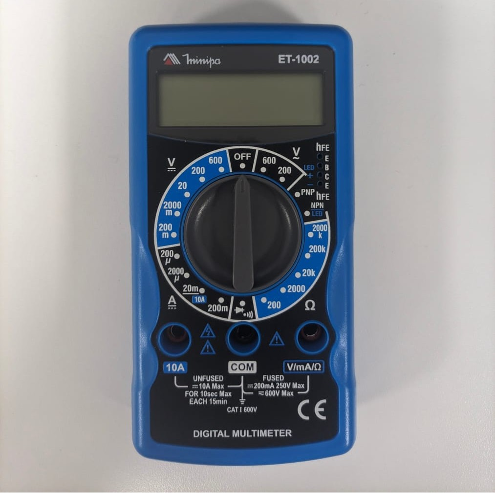

Eletroeletrônica
O que é a Ponte de Wheatstone?
É um circuito elétrico usado para medir resistências elétricas desconhecidas com precisão.
O que é multímetro?
É um dispositivo capaz de medir diversas grandezas elétricas

O que é medida de continuidade?
É um teste feito com um multímetro para verificar se um circuito está fechado ou interrompido.